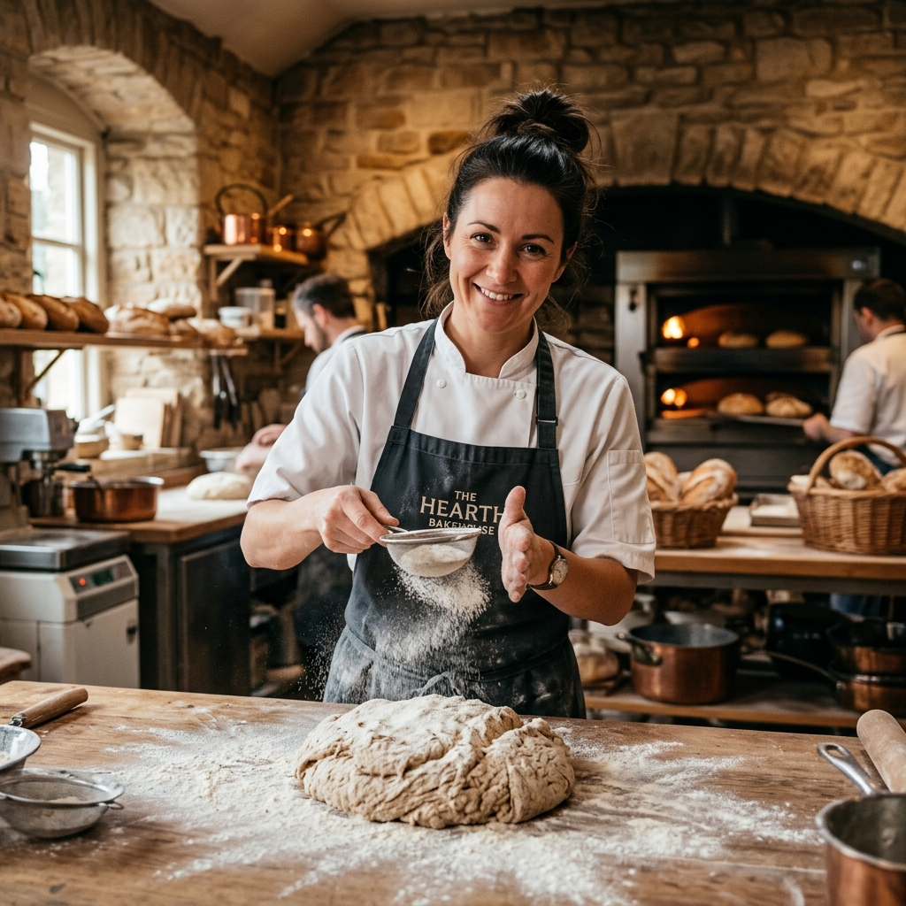
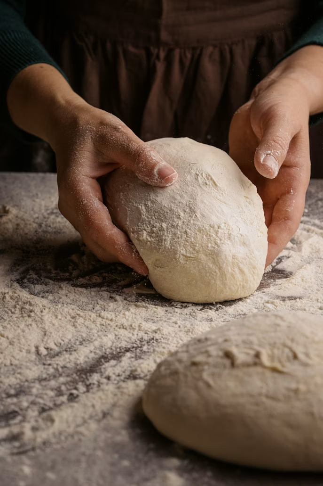
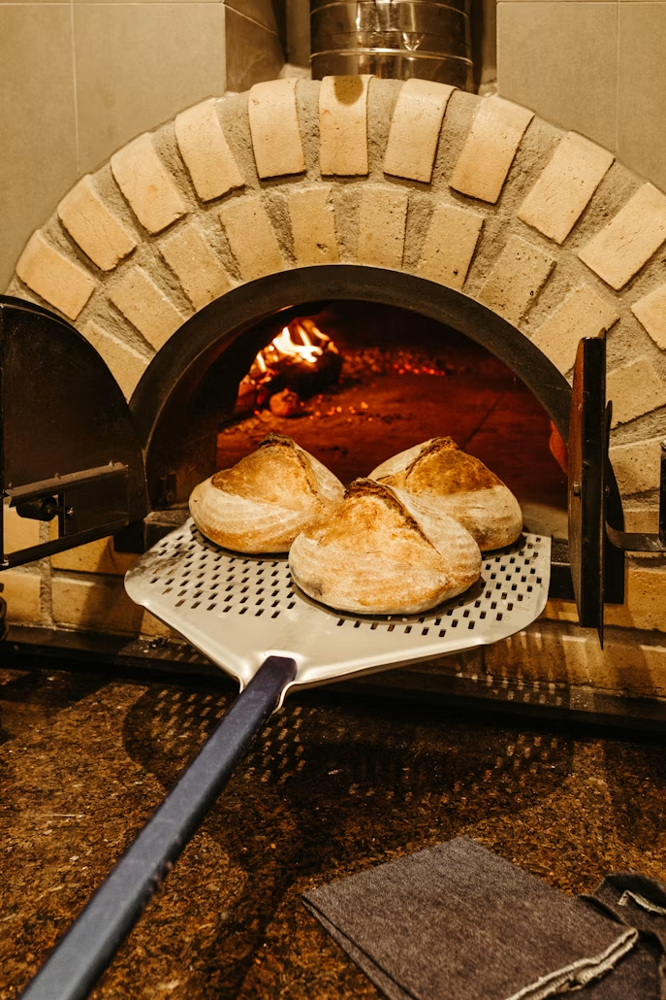
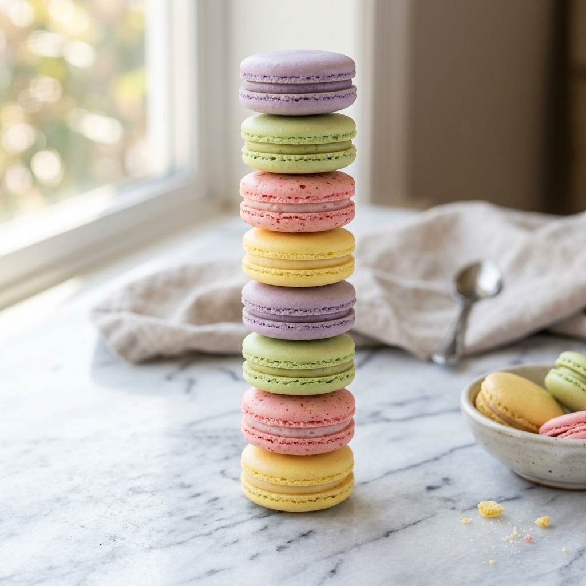

Artisanal flour, wild starters, and ancient baking secrets.

Founded as a small neighborhood shop, Bakingo was born out of a desire to bring simple, delicious, and fresh baking traditions to our community. We believe that great bread takes time, care, and simple ingredients.
We began with a single wild yeast starter, nicknamed "Lulu," which we have nourished and kept alive for over forty years. Lulu gives our sourdough boules their signature lactic tang, deep golden crust, and airy pockets that set them apart.
Every croissant is rolled by hand in the early hours of the morning, resulting in precisely 81 micro-layers of organic pasture-fed butter and flaky pastry dough. No short-cuts, no artificial additives—just water, flour, salt, yeast, and time.
We partner with trusted local farms and mills to bring the finest ingredients to every bake.

Our dough ferments naturally over 36 hours to develop rich flavor and exceptional texture.

Every loaf is handcrafted and baked fresh each morning for peak quality and taste.
With 40 years of sourdough stewardship, Pierre believes that wheat speaks a language only patience can translate.

Sophie trained under Paris's top confectioners. Her chocolate mirror glazes and macarons are edible modern art.